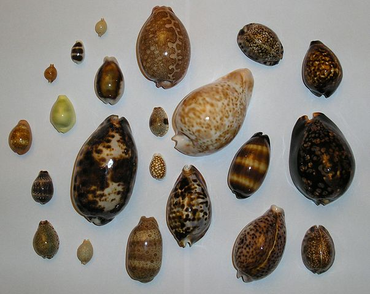
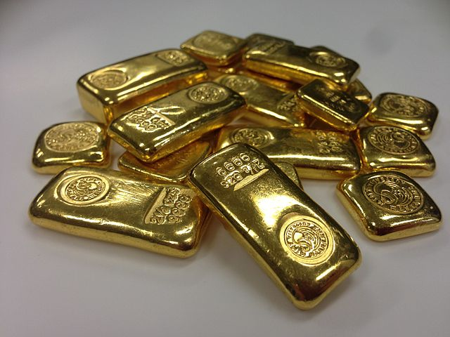
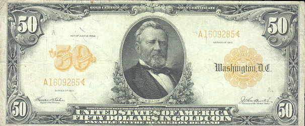
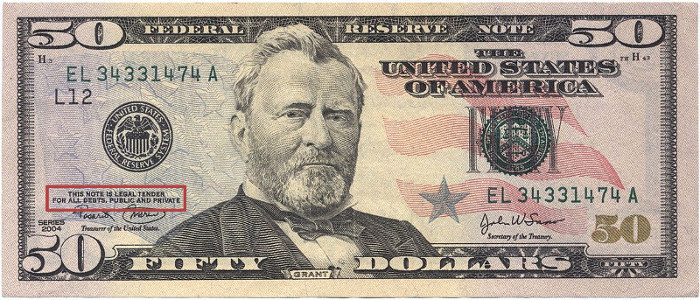
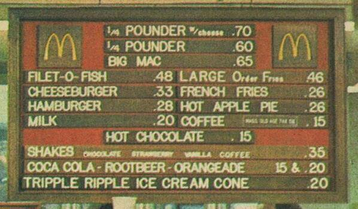
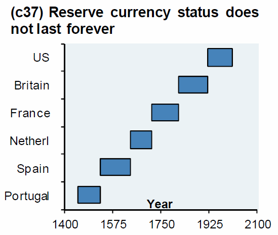

(Нажмите ? для получения помощи, n и p для следующего и предыдущего слайда соответственно)
Прямой обмен товаров или услуг без использования платёжного средства (такого как деньги)

Они не универсальны, не редки

Серебро и медь использовались в качестве денег не потому, что они хорошие деньги, а потому, что золото было недостаточно хорошо
Средство обмена обеспеченное некоторой ценностью (товаром), но не имеющее ценности само по себе
Доверие
Как и любое обещание оно будет нарушено…

"Пятьдесят долларов золотой монетой, выплачиваемой предъявителю по запросу"
5-го апреля 1933 года президент Франклин Рузвельт издал приказ
"запрещать накапливать золотые монеты, золотые слитки и золотые сертификаты в пределах континентальной части США"
15-го августа 1971 года президент Ричард Никсон отменил международную конвертацию долларов в золото

"Эта банкнота является законным платежным средством по всем долгам, государственным и частным"

Макдональдс меню 1971 года
Смотрите больше примеров и анализ на WtfHappenedIn1971.com
Валюта, установленная как деньги, часто государственным регулированием, но не имеющая внутренней ценности
Государство имеет власть девальвировать деньги. Непредсказуемо.
Как и любой властью, ею злоупотреблят…

Если ракушки, золото, золотые сертификаты, фиатные банкноты это деньги…
то почему биткоин это не деньги?
| Актив | Удобство | Обеспеченно |
|---|---|---|
| Золото | низкое | верой, что эмиссия не изменится значительно |
| Фиатные деньги | высокое | верой, что государство не злоупотребит властью |
| Биткоин | высокое | математикой |
Что вы выбираете?